This week the Sirius blog post series presents «how to integrate validation rules on a diagram ?».
EMF provides a powerful validation system which helps you to detect errors in your model. But sometimes you would like to add some more rules not already implemented in your metamodel. Sirius is there again!
Imagine that we would like to represent the well known Arcade game from the Wreck it Ralph! movie.
We define a metamodel which allows us to represent the Building present in the game.
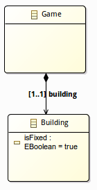
We define also an attribute isFixed to know if the building is broken and so if it needs to be fixed.
Then we create a new Sirius specification project and we define a viewpoint with a new diagram named SemanticValidation. A Building mapping is added and provides two different styles according if the building is broken or not.
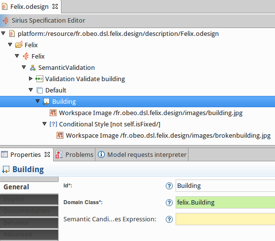
We create a model example defining a Game element and a Building, we activate our new viewpoint and create a new SemanticValidation diagram.
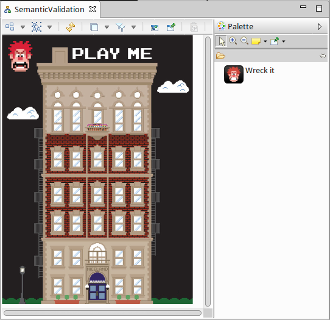
We create also a Wreck it tool which can be applied on a Building and set the isFixed attribute to false. After applying the tool on the building the diagram looks as below:
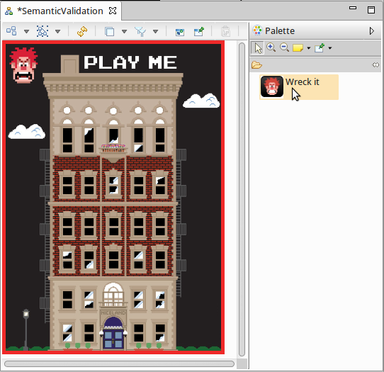
Next a rule is defined to detect when the isFixed attribute is set to false. We improve our diagram specification by adding a new Validation rule. To do so on the diagram specification element, select New Validation > Validation and create a Semantic Validation Rule.
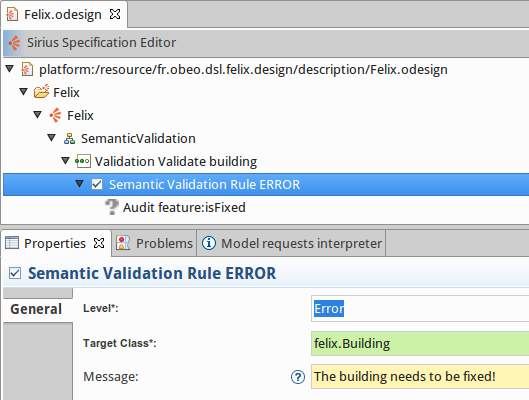
Then, we set :
Level: severity of issues thrown when the validation rule is broken. It could be Information, Warning or Error.target class: kind of semantic element checked by the rule.Message: that will be shown to the user in the Problems view when the validation failed.An Audit element must be also defined to provide the expression that must be checked to validate the rule. While the expression returns true, there is no validation issue else issues will be listed in the Problems view. It is possible to define several audits for one rule, in this case the rule is considered as violated if at least one audit applies.
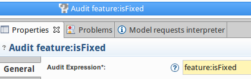
The user can call the validation thanks to a right click on the diagram background and by selecting the Validate diagram menu:
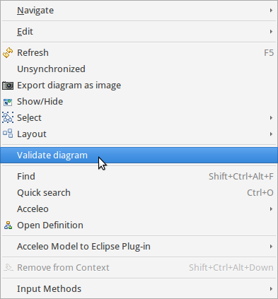
If we activate the validation on our wrecked building, we got one error:
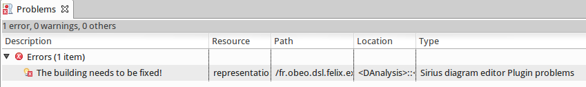
On the diagram, the validation issue is also visible thanks to an error decorator added on the figure:
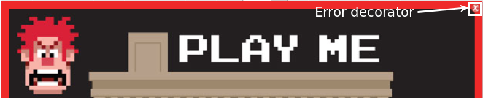
Another possibility is to define validation rules based on graphical elements instead of the semantic ones.
We create another representation named ViewValidation which provides a view validation rule:
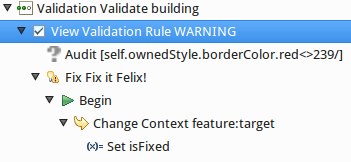
In this case, the validation rule will be applied on a mapping.
This time an error will be thrown when the border color RGB red component of the building will be different than 239.
We define also a quick fix which also modified the semantic model to fix the building again.
People using Eclipse loves their IDE because it proposes powerful Quick fix. Sirius allows us to provide really easily a "Felix quick fix it":
On the validation rule element, we define the Fix.
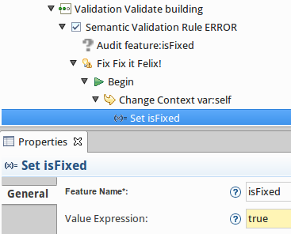
We set the fix message and define how the fix will update the model. Finally if we launch the quick fix on our example, it just changes the value of the isFixed attribute to true.
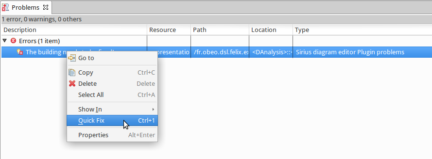
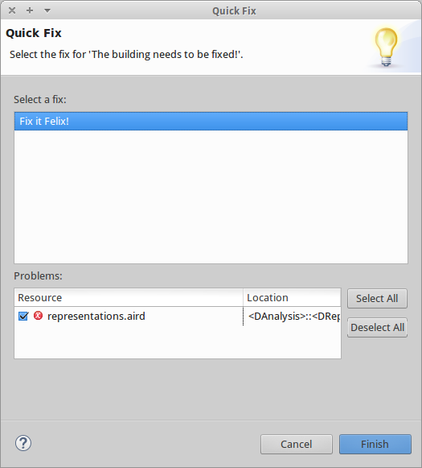
Thanks to Sirius and Felix our building is all fixed.
You can wreck it again... thanks Ralph...
The sample code from this example is available on github: https://github.com/mbats/sirius-blog/tree/master/validation